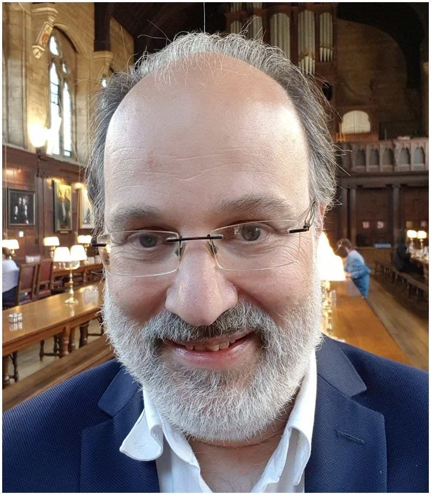
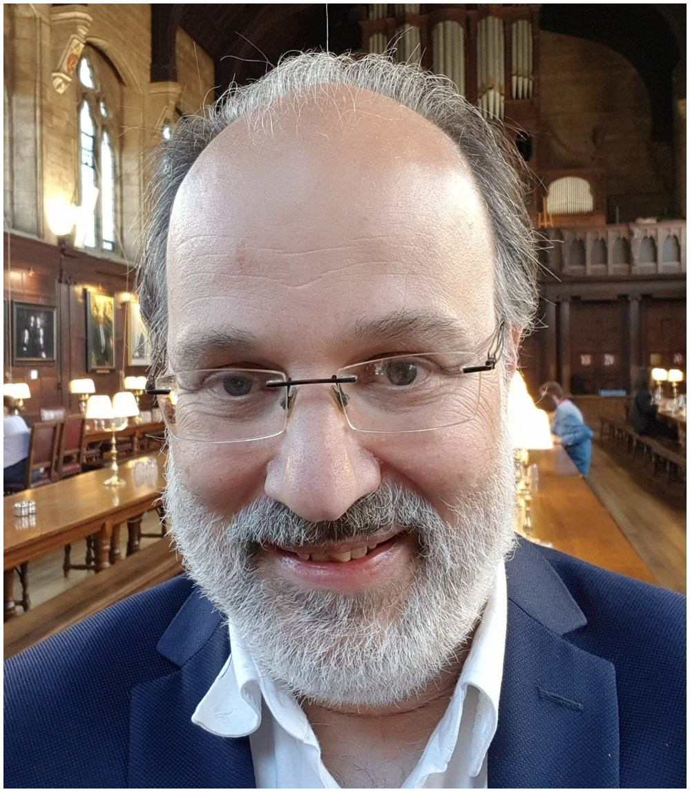
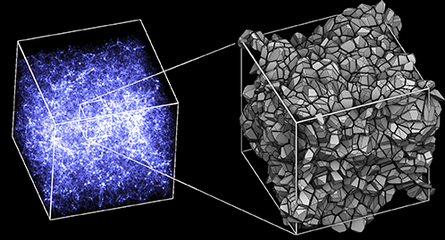
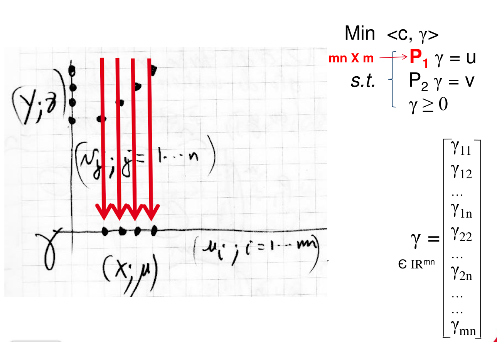
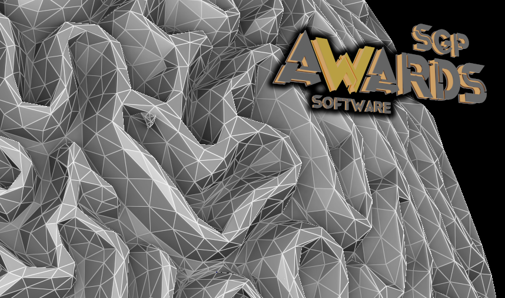
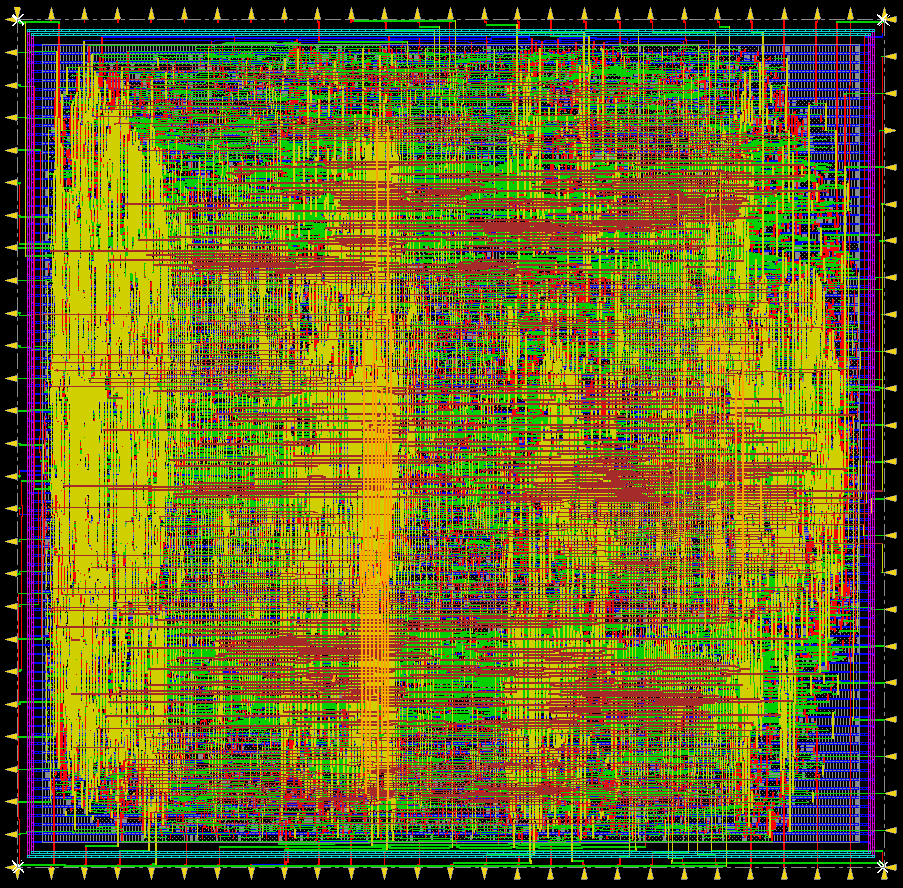
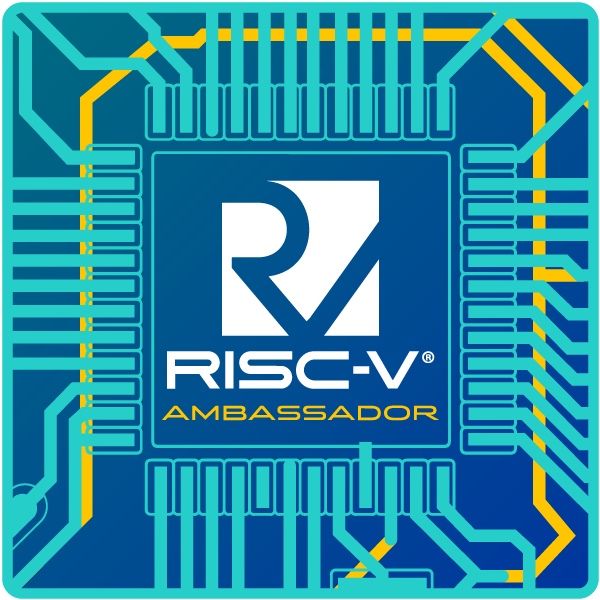

Bruno Lévy's homepage
|

Computational Physicist Inria Research Director (DR) Chargé de mission Inria France 2030 Bruno.Levy@inria.fr |
|

Computational Physicist Inria Research Director (DR) Chargé de mission Inria France 2030 Bruno.Levy@inria.fr |

Media and press coverage This is joint work with Roya Mohayaee, Sebastian von Hausegger, Farnik Nikakhtar and Ravi Sheth. |
|

|
|

You will find here the code of more than 30 research articles published over the last 20 years in ACM SIGGRAPH, ACM TOG, SGP, Eurographics... Geogram was supported by two European Research Council grants (ERC): GOODSHAPE and VORPALINE, and received the SGP 2023 software award |
|


|
I was born the 14th of May 1972. I defended my Ph.D. in 1999
on computational topology, combinatorics and embedding,
directed by Jean-Laurent Mallet. I was awarded the SPECIF
prize (now known as Gilles Kahn / Acad. Sci. prize) of the best French
Ph.D. thesis in CS, then I did a
post-doc in Stanford in 2000. I was hired by Inria in 2000 as
a junior researcher. In 2004, I created the ALICE team (it
became an Inria project in 2006). I obtained an ERC Starting
Grant (GOODSHAPE) in 2008, and an ERC Proof of Concept Grant
(VORPALINE) in 2013. I was promoted research director in 2008,
1st class research director (DR1) in 2012 and exceptional class (DR0) in 2021. I was awarded
the
Inria Young Researcher Award in 2011. In 2019, two new Inria
teams stemmed from my previous team ALICE: MFX on compter aided fabrication, and
PIXEL on geometry processing.
From Nov. 2018 to Dec. 2022, I was the director
of the Inria Nancy Grand-Est research center (450 people, 20 teams, 17 in Nancy, 3 in Strasbourg).
My initial topic is Geometry Processing. From 1998 to 2006, I focused on the problem of mesh parameterization, and produced several algorithms that became a de-facto standard (LSCM, ABF++, PGP). Then I contributed to two start-up creations, for transferring my results in 3d gridding for oil exploration (Paradigm/Earth Decision Sciences) and visualization (Scalable Graphics)
From 2006 to 2019, I focused on some numerical problems in Scientific Computing. I contributed to lay spectral geometry processing fundamentals and made it practical with the first algorithm that computes a Fourier-like basis for surface meshes (manifold harmonics). I also established the regularity of Lloyd's energy and proposed a Newton solver for quantization, generalized it to propose the first automatic algorithm for hex-dominant meshing (Lp-CVT) and finally the first solver for 3D semi-discrete optimal transport. Most of my research results are available in my GEOGRAM and GRAPHITE Open-Source softwares. The main results of my two ERC projects on meshing and sampling are transferred to Tessael, a start-up we have created.
Now (2020,...) I am mainly working on computational methods for cosmology (Physical Review Letters, 2022) and fluid dynamics (Journal of Computational Physics, 2022). I'm also interested in novel hardware architectures.
Physics and Optimal transport
Sampling and meshing
|
Hexahedral meshing
Theses
|
Numerics
Mesh Parameterization (1998-2006)
|
Alumni
|
Software
Selected Recorded Talks and Slides
Images and Animations
|
Editorial activities and conferences
Program Commitees 2010-2017
|